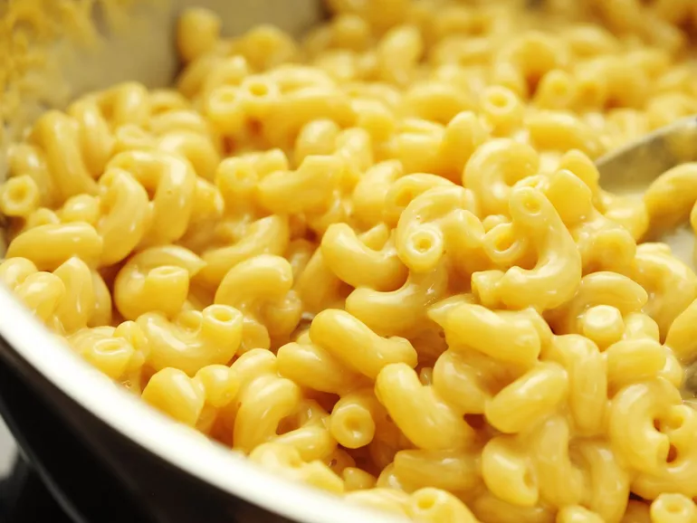

3-Ingredient Mac & Cheese

Description
This is another one of my favorites by Kenji, an easy stovetop mac and cheese
that is sure to get your gears turning. This only has 3 major ingredients so it
will not take much work to make. Don't worry if the pasta seems like it will
need more water to cook it in. There's a method to Kenji's madness in that
reducing the amount of water concentrates the starches that come out of the
pasta when boiling. This concentrated starch will help the sauce stay creamy
and emulsified. Without the starch, the cheese may turn tough and greasy. Just
make sure to stir frequently to keep the pasta from sticking.
Ingredients
- 6 ounces (170g) elbow macaroni
- Salt
- 6 ounces (180ml) evaporated milk
-
6 ounce (170g) grated mild or medium cheddar cheese, or any good melting
cheese, like Fontina, Gruyere, or Jack
Steps
-
Place macaroni in a medium saucepan or skillet and add just enough cold
water to cover the pasta
- Add pinch of salt and bring to a boil over high heat, stirring frequently
-
Continue to cook, stirring, until water has been almost completely absorbed
and macaroni is just shy of al dente, about 6 minutes
- Immediately add evaporated milk and bring to a boil
-
Add cheese and reduce heat to low and cook, stirring continuously, until
cheese is melted and liquid has reduced to a creamy sauce, about 2 minutes
longer
- Season to taste with more salt and serve immediately
Note
-
If you are willing to add a few other ingredients, try adding a teaspoon to
tablespoon of hot sauce (like Frank's or Louisiana), some mustard powder, or
a knob of butter stirred in with the evaporated milk.
Link to recipe on Serious Eats.